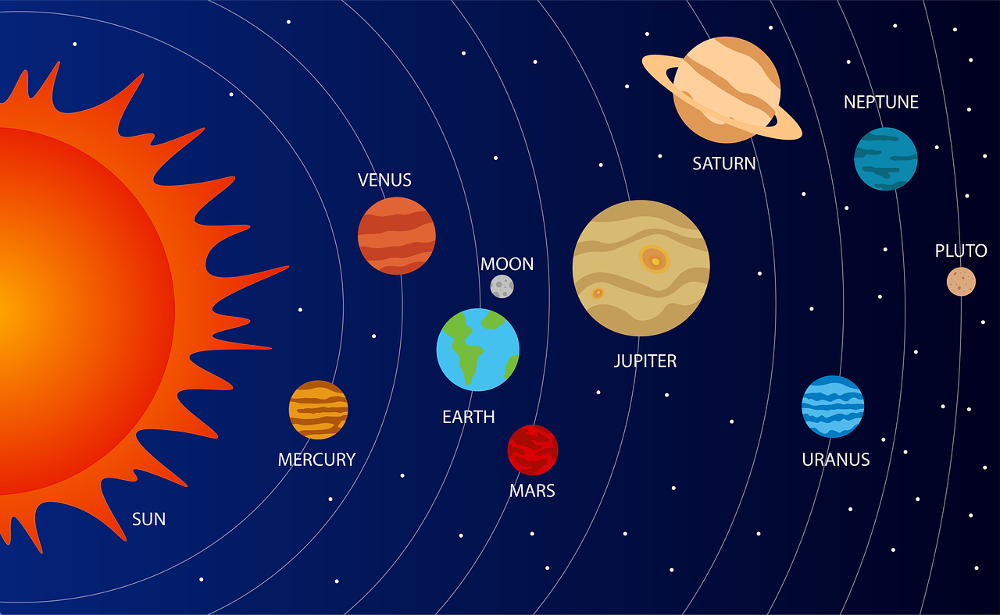

In this website, you can use the links at the bottom to open
the pages, or you can click on the planets in the image above and open the pages.
- The Solar System is a system consisting of the Sun
and the objects that orbit it.
- It was formed 4,600,000,000 years ago!
- Most of the system's mass is in the Sun (99% of mass) and the other part lies in
the planets.
These planets are Mercury, Venus, Earth, Mars, Jupiter, Saturn, Uranus, and Neptune.
- The first four planets (Mercury, Venus, Earth and Mars) are called
the rocky planets becaus ethey are mostly composed of rocks.
- Jupiter and Saturn are called
gas giants as they are
mostly composed of gas, and Uranus and Neptune are called ice giants for the same reason.
- Of the objects that orbit
the Sun, the largest are the eight
planets.
- There are also asteriods and comets and Dwarf Planets orbiting the Sun. In
this
website, I'll talk about only the planets (no Pluto, Sun, or moon) just to keep it simple.